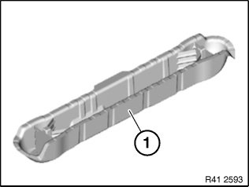
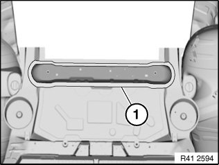
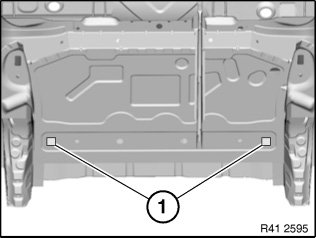

Rear Cross-Member: Service and Repair
41 11 620 Replacing rear axle take-up cross-member at rear (luggage compartment floor completely removed)
Read contents of Body, General. Service Precautions
Refer to texts on KSD CD (flat rate number 41 11 620) for details of stripping and rigging tasks.
Place vehicle on straightening bench.

Following new body parts are required (refer to EPC):
- (1) Cross-member, rear axle take-up, rear

Open weld joints in area (1).

Open weld joints in areas (1).